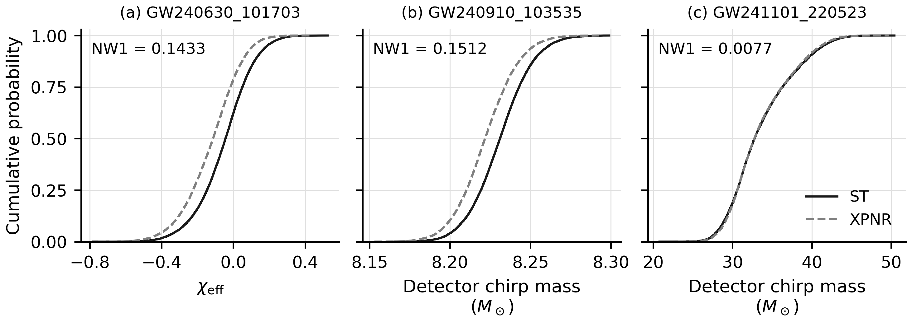
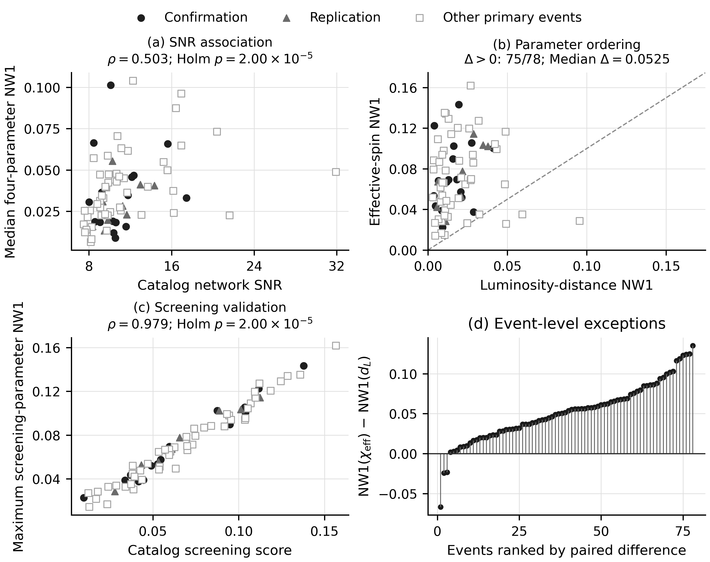
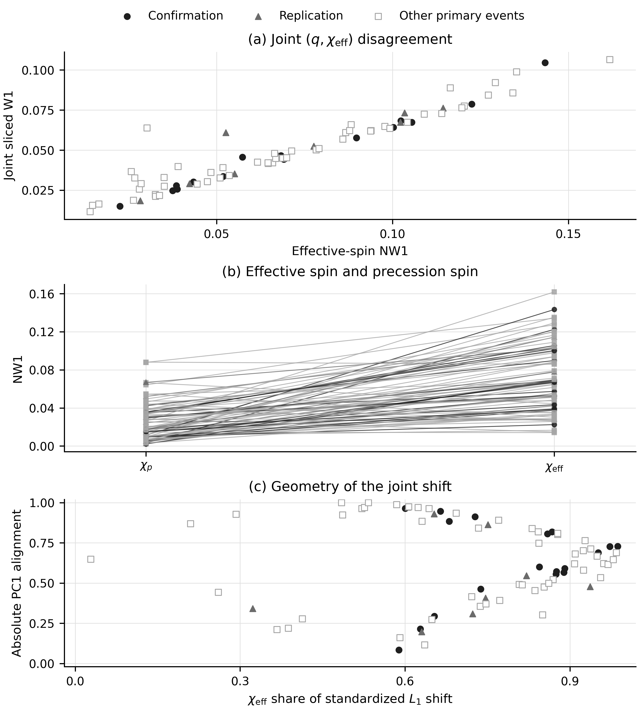
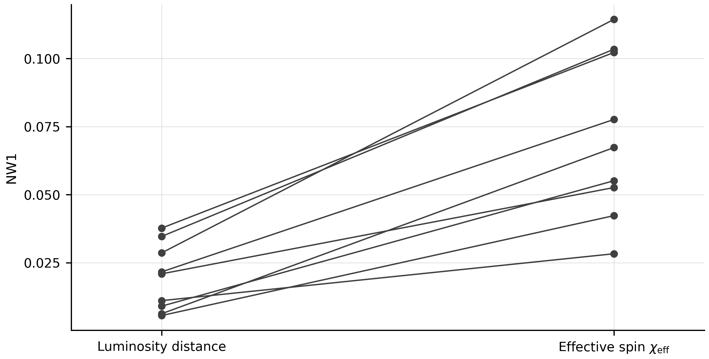
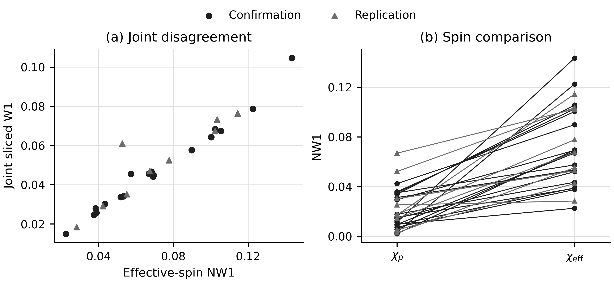
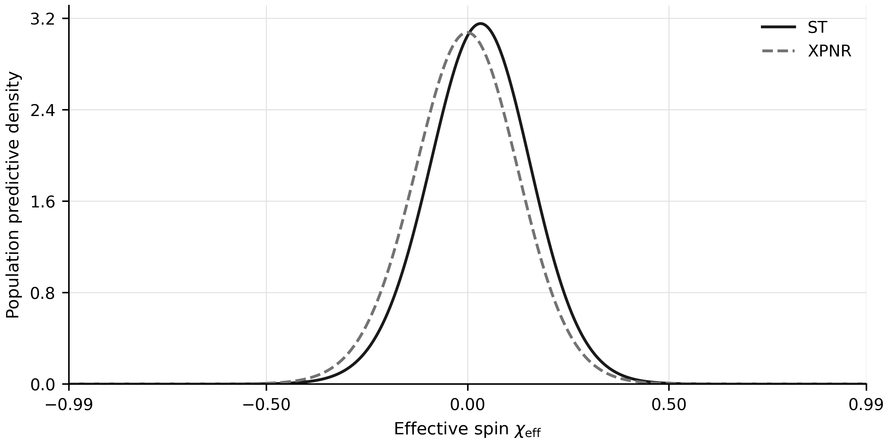
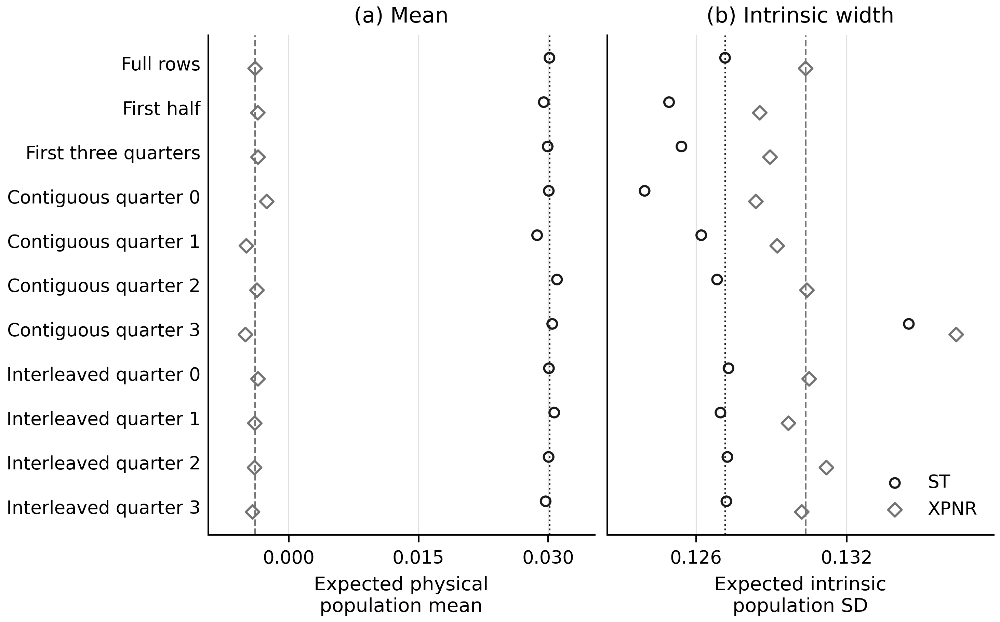

Cdf examples readable


Browse every file in the supplied reproduction package, including exploratory joint-distribution and reduced population work.
The supplied GWTC5_REPRO.zip is preserved byte for byte, alongside its extracted contents. Each of its 121 payload files is checked against the supplied SHA-256 manifest before publication. The complete project archive also includes this collection and the existing frozen analysis materials.
This supplied package contains code and figures. Input datasets, frozen result tables, and saved population caches or evidence are not included in it. Some scripts retain original workspace paths; consult the package notes and manifest before running them. Exploratory figures are presented as supplied, without assigning them confirmatory status or adding numerical claims to the dashboard.






